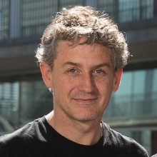
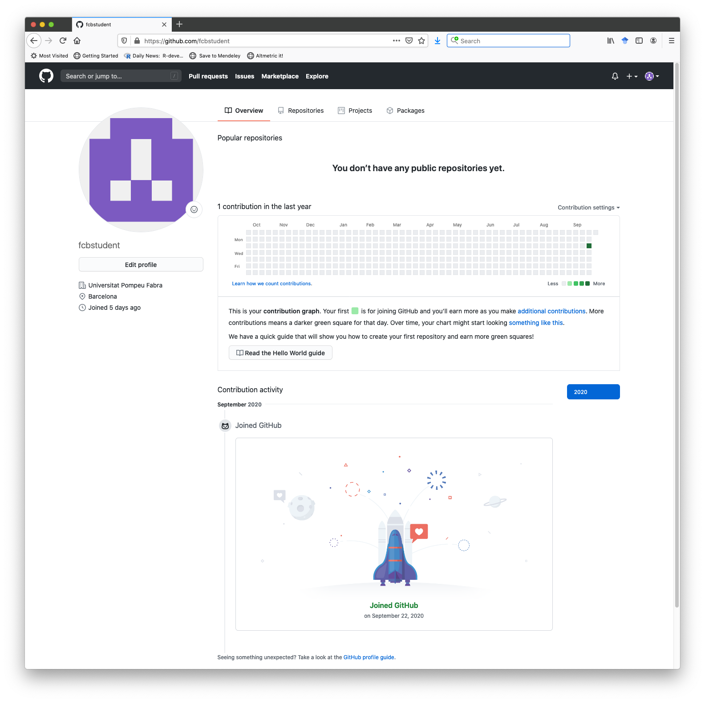
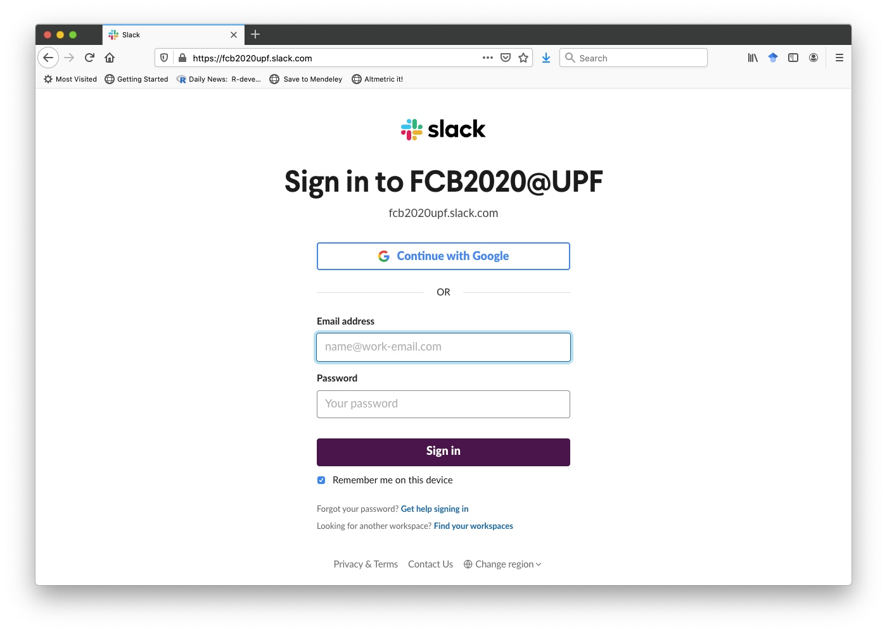
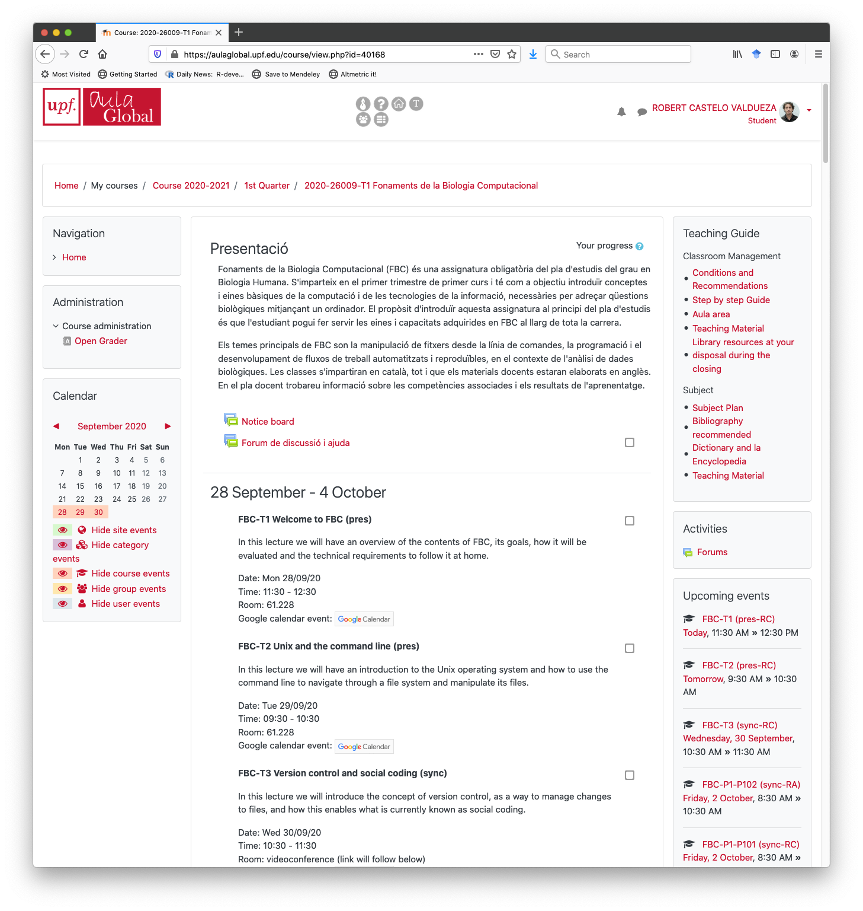
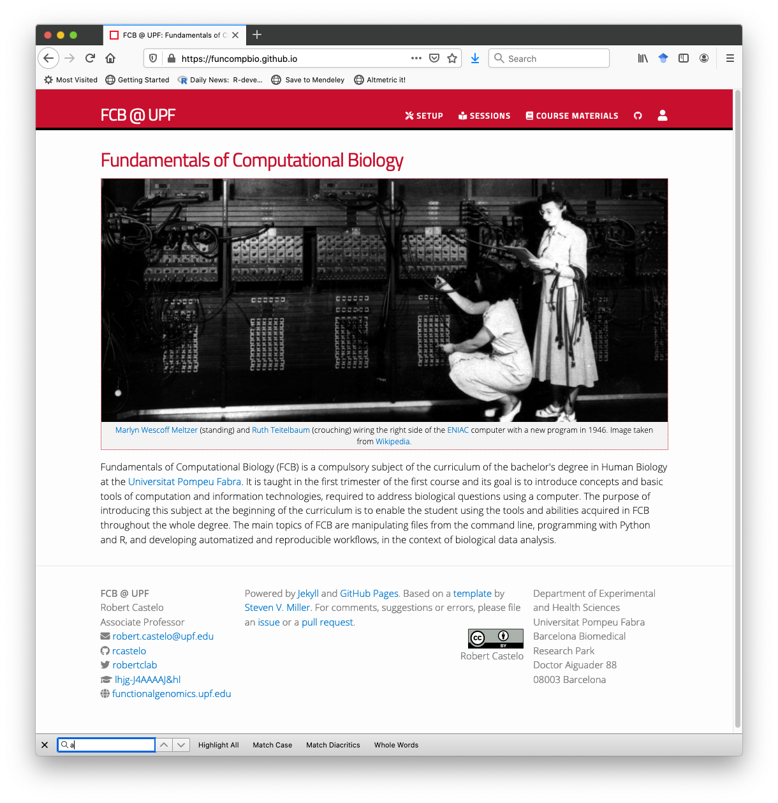

class: title-slide, center, middle # Fundamentals of Computational Biology ## Robert Castelo ### Dept. of Experimental and Health Sciences ### Universitat Pompeu Fabra .footnote[[robert.castelo@upf.edu](mailto:robert.castelo@upf.edu)] ### BSc on Human Biology ### UPF School of Health and Life Sciences ### Academic Year 2020-2021 --- # Instructors <div class="sybs-row"> <div class="sbys-column"> <p align="center"> <a href="https://www.ebi.ac.uk/about/people/ricard-argelaguet">Ricard Argelaguet</a><br> EMBL-EBI<br> seminars & practicals </p> </div> <div class="sbys-column">  <p align="center"> <a href="https://functionalgenomics.upf.edu/people/rcastelo">Robert Castelo</a><br> DCEXS-UPF<br> coordinator, lectures, seminars & practicals </p> </div> <div class="sbys-column"> <p align="center"> <a href="http://grib.imim.es/about-us/jordi-mestres">Jordi Mestres</a><br> IMIM<br> chemoinformatics applications </p> </div> </div> --- # Computational biology * [Computational biology](https://en.wikipedia.org/wiki/Computational_biology) is the study of biology using computation. * Computational biology **is** biology, because the word _computational_ is an adjective. * Fundamentals of Computational Biology (FCB) will introduce to you concepts and basic tools of computation and information technologies, required to address biological questions using a computer. * The purpose of introducing this subject at the beginning of the curriculum is to enable the student using the tools and abilities acquired in FCB throughout the whole degree. --- # Course topics * The main topics of FCB are: * Manipulating files from the command line. * Programming. * Development of automatized and reproducible workflows, in the context of biological data analysis. * These skills are highly and increasingly appreciated in academic and industrial environments from the life sciences. * Your CV can grow with every technique, tool or platform that you will learn to use in FCB. --- # Course structure * Three types of sessions: * Presential (pres): first, second and last lecture, second practical, all seminars. * Online-synchronous (sync): third lecture, all practicals except the second one. * Online-asynchronous (asyn): lectures, except for first to third and last. * Presential sessions may go online-synchronous in case of covid19 restrictions.  --- # Course workload * One single group-class for lectures (~ 60 students/group), two for seminars (~ 30 students/group), four for practicals (~ 15 students/group) * One ECTS (~ 25hrs) throughout 10 weeks: * 3 hrs of lectures * 2 hrs of seminars * 2 hrs of practicals * 16 hrs of unsupervised work (study, assignments, etc.) * FCB has 5 ECTS, 125hrs in 10 weeks (~ 12 hr/week). Because of the learning goals of FCB, we reduce 4 hrs of lectures to have one more seminar: * **11** lectures = 11 hrs * **6** seminars x 2 hrs = 12 hrs * **10** practicals x 2 hrs = 20 hrs * 43 hrs of class time work (~ 4 hrs/week) * 82 hrs of out-of-class time work (~ 8 hrs/week) --- # Course evaluation * Continuous (60%) + final (40%) over a total of 10 points. * Continuous evaluation: * Seminars through a test on programming problem solving (1 point on the final grade): **November 9th, 11:30-12:30** * Practicals through the submission of computer assignments (2 points on the final grade): ~ 8 assignments, one week submission period, penalty for late submissions. * Programming project (3 points on the final grade): ~ 14hrs work including 2 seminars, submission deadline ~Dec 10th, penalty for late submissions. --- # Course evaluation * Final evaluation: * Multiple-choice exam ("PEM" in its Catalan acronym) for 50% of the final evaluation. * Open written test ("Assaig" in its Catalan acronym) for 50% of the final evaluation. * To pass FCB at the end of the term, the student must: 1. Obtain a minimum grade of 4/10 in the average evaluation of seminars and practicals. 2. Obtain a minimum grade of 4/10 in the evaluation of the programming project. 3. Obtain a minimum grade of 4/10 in the final evaluation. * Remedial exam on July for the final (40%) evaluation. **It is not possible** to retake the continuous evaluation. --- # Software tooling * You need to install in your computer the following software tools: * Unix shell: by Practical 1 on October 2nd. * Git version-control system: by Practical 1 and October 2nd. * Text editor: by Practical 2 and October 5th. * Python and Jupyter Notebook: by Practical 4 and October 15th. * R and RStudio Notebook: by Practical 8 and November 12th. * You will find full instructions at https://funcompbio.github.io/setup --- # Social-media productivity profiles * We will be using two social-media productivity platforms: [GitHub](https://github.com) and [Slack](https://slack.com). * You will need to create a profile in each of these platforms (instructions will follow) using your UPF student email address. * It is **very important** that you check and use your UPF student email address for any communication related to FCB. * Important announcements, deadlines, etc. related to FCB will only occur through your UPF student email address and the FCB Moodle site. * GitHub and Slack are tools to facilitate the achievement of the learning goals of FCB, but do not replace the UPF student email and FCB Moodle site for official communications. --- # Social-media productivity profiles - GitHub * **GitHub** is a provider of hosting for software development and version control using Git. * The UPF has recently become a partner school of its [education program](https://education.github.com), which will allow us to use [GitHub Classroom](https://classroom.github.com) for submitting and correcting assignments from practicals. * Actually, **all assignments will be privately stored** under the github profile [https://github.com/funcompbio](https://github.com/funcompbio) and **your public GitHub profile can stay completely empty**. * Your GitHub account can become a productive and powerful platform for your computational work throughout the degree: **keep it alive throughout the degree**. * You may consider using it to store some of your student assignments/projects, make them even public and make even your own professional profile; see, for instance [https://lucywan.github.io](https://lucywan.github.io) or [https://dieuwkehupkes.github.io](https://dieuwkehupkes.github.io). --- # Social-media productivity profiles - GitHub  --- # Social-media productivity profiles - Slack * **Slack** is a messaging platform that allows one to organize messages by topic, is all searchable, facilitates sending code and attachments and integrates with other platforms, including [Google G Suite](https://gsuite.google.com/slack) and [GitHub](https://slack.github.com). * The UPF offers a Slack workspace called _upfbarcelona_ for all members of the UPF community (students, faculty, etc.); see [https://guiesbibtic.upf.edu/slack](https://guiesbibtic.upf.edu/slack). * We have a Slack workspace for FCB called _fcb2020upf_ associated with the URL: [https://fcb2020upf.slack.com](https://fcb2020upf.slack.com), but **it has no public profiles**.  --- # Social-media productivity profiles - Slack <img src="slackwindow.png" width="100%"> --- # Moodle site * The Moodle site of FCB will be the entry point for all materials and activities.  --- # GitHub site * The GitHub site of FCB at [https://funcompbio.github.io](https://funcompbio.github.io) will store the materials (lectures, seminars and practicals), which will be linked from the Moodle site.  --- class: middle, center # Questions !?